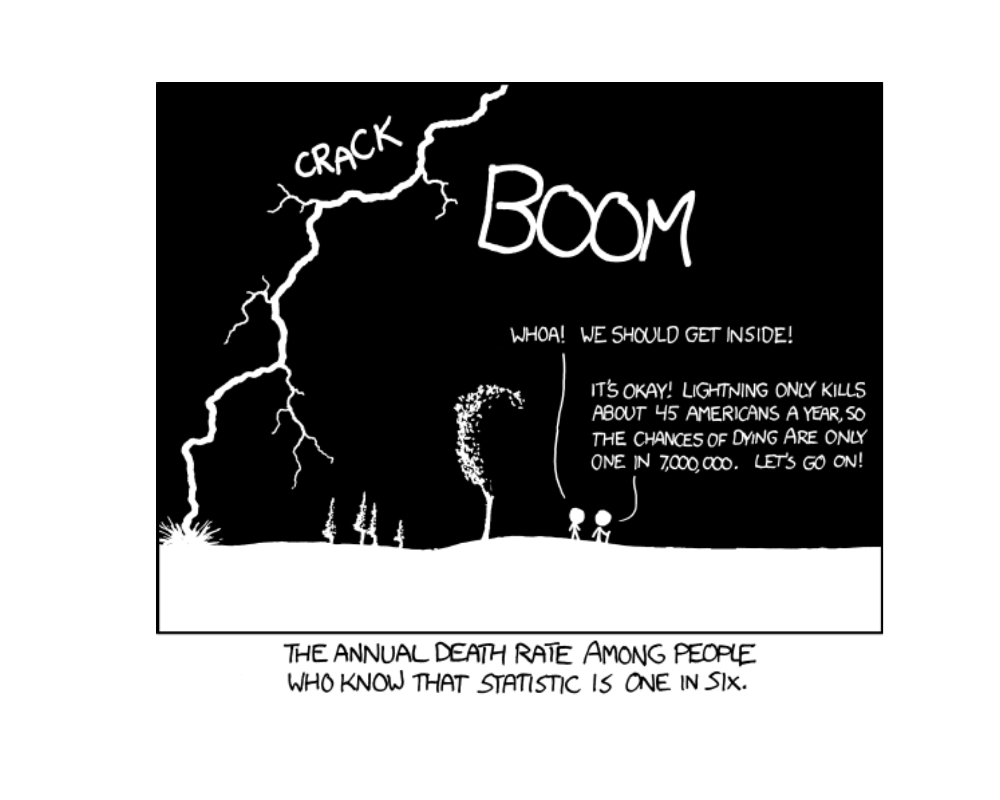
Lesson 6: Conditional Probability
Calendar
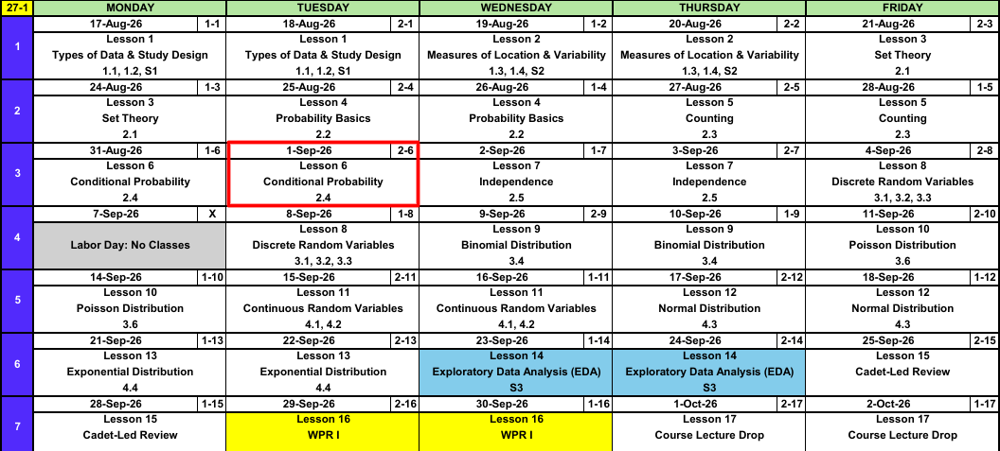
What We Did: Lessons 1 through 5
NoteReview: Data, Study Design, and Summaries (Lessons 1 and 2)
- Population vs sample, parameter (\(\mu\), \(\sigma\), \(p\)) vs statistic (\(\bar{x}\), \(s\), \(\hat{p}\)).
- Random sampling buys generalization, random assignment buys causation.
- Center: mean, median, trimmed mean. Spread: \(s^2\), \(s\), and the fourth spread \(f_s\).
NoteReview: Set Theory (Lesson 3)
- Experiment, sample space \(\mathcal{S}\), event as a subset of \(\mathcal{S}\).
- Union \(A \cup B\) is “or”, intersection \(A \cap B\) is “and”, complement \(A'\) is “not”.
- Mutually exclusive: \(A \cap B = \emptyset\).
- De Morgan: \((A \cup B)' = A' \cap B'\) and \((A \cap B)' = A' \cup B'\).
NoteReview: Probability Basics (Lesson 4)
- Three axioms: \(P(A) \ge 0\), \(P(\mathcal{S}) = 1\), and mutually exclusive events add.
- Complement rule: \(P(A') = 1 - P(A)\).
- Addition rule: \(P(A \cup B) = P(A) + P(B) - P(A \cap B)\).
- Equally likely outcomes: \(P(A) = N(A)/N\).
NoteReview: Counting (Lesson 5)
- Product rule: \(n_1 n_2 \cdots n_k\).
- Permutation (order matters): \(P_{k,n} = \dfrac{n!}{(n-k)!}\).
- Combination (order does not): \(\dbinom{n}{k} = \dfrac{n!}{k!\,(n-k)!}\).
- They differ only by \(k!\), and both feed \(P(A) = N(A)/N\).
What We’re Doing: Lesson 6
Objectives
- Compute conditional probabilities and apply the multiplication rule. (SLO 7)
- Apply the Law of Total Probability. (SLO 7)
- Apply Bayes’ Theorem to update probabilities given new information. (SLO 7)
Required Reading
Devore 2.4
Admin: WebAssign Access
- Some of you have lost WebAssign. More of you will
- Cause: you are on Cengage Temporary Access and never applied your two bookstore codes
- Check: cengage.com, top left. “Cengage Unlimited” is good, plain “Cengage” is not
Fix
- Bookstore email, Digital Content Bookshelf, grab both codes
- cengage.com, Enter Access Code, apply both
- Wait up to 24 hours
- Never make a second account. Duplicates: 800-354-9706
- Full instructions
Extensions
- Fixed it? Tell me and I extend what you missed
- Through Friday 4 Sep. Then no more
Admin: The Project
- Project instructions are on Canvas
- Read them before Lesson 8 and bring your questions
- The data agreement is signed by Lesson 8. Ask in Lesson 8 if something in it concerns you, otherwise I expect it signed
Open Vantage
Go to MA206 workspace in Vantage. Bookmark it. That is where the project data lives.
Break!
Family
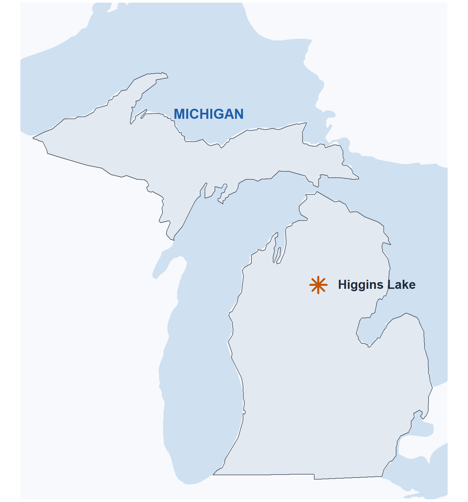
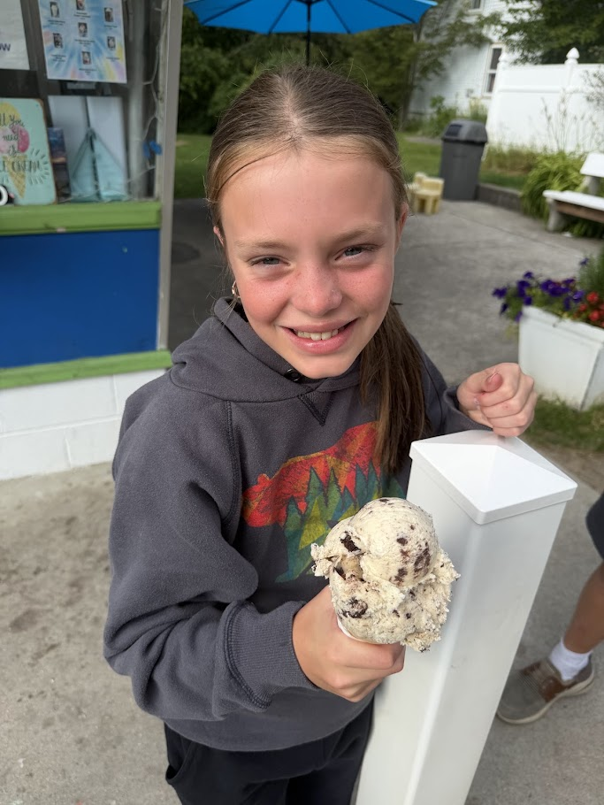
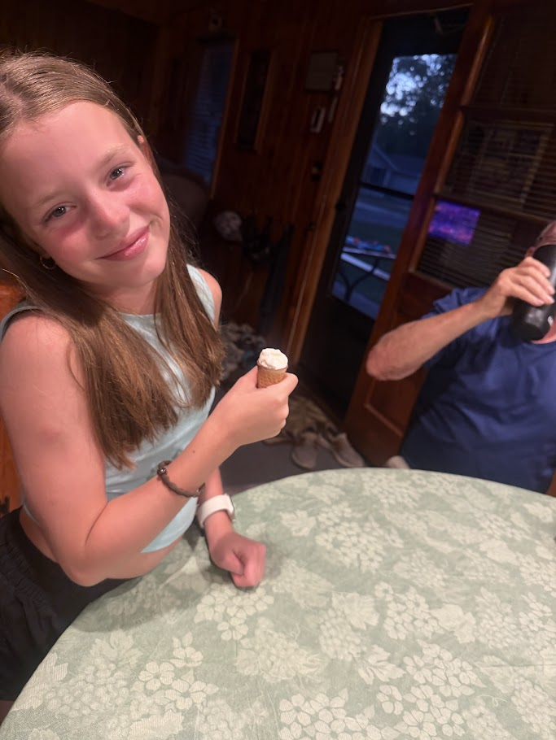
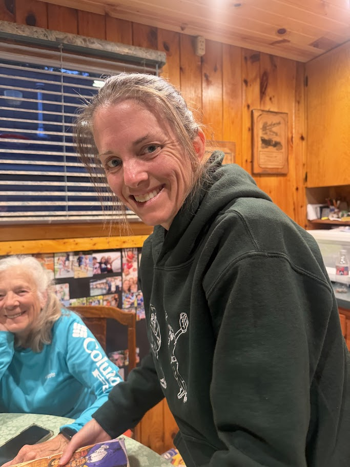
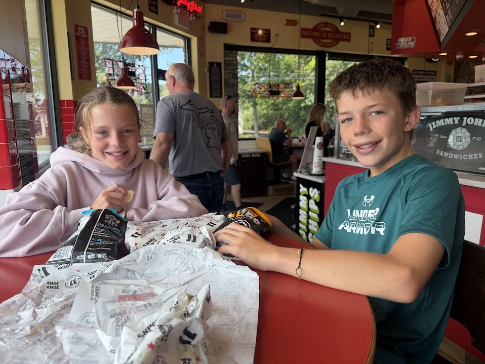
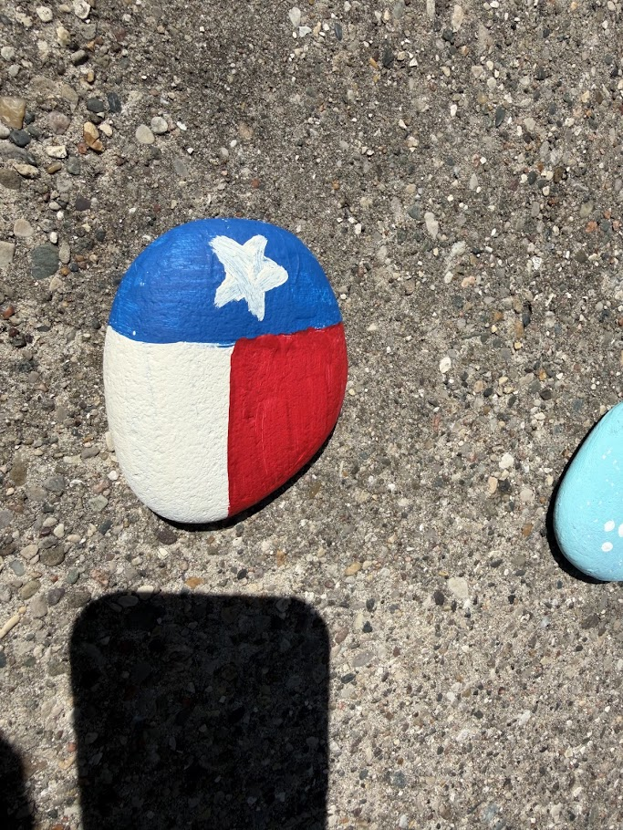
The Takeaway for Today
NoteKey Concepts from Lesson 6
- Conditional probability: \(P(A \mid B) = \dfrac{P(A \cap B)}{P(B)}\) for \(P(B) > 0\)
- Multiplication rule: \(P(A \cap B) = P(A \mid B)\,P(B)\)
- Law of Total Probability: \(P(B) = \sum_{i=1}^{k} P(B \mid A_i)\,P(A_i)\) over a partition \(A_1, \dots, A_k\)
- Bayes’ Theorem: \(P(A_j \mid B) = \dfrac{P(B \mid A_j)\,P(A_j)}{\sum_{i=1}^{k} P(B \mid A_i)\,P(A_i)}\)
- Conditioning shrinks the sample space to \(B\), it does not change the experiment
Conditional Probability
ImportantDefinition: Conditional Probability
For any two events \(A\) and \(B\) with \(P(B) > 0\), \[P(A \mid B) = \frac{P(A \cap B)}{P(B)}.\]

Example: 120 Coffee Orders
A shop logs its next \(120\) orders. \(75\) were hot coffee and \(45\) were iced. \(70\) of the \(120\) also got a donut. Of the iced orders, \(30\) got a donut.
A regular walks out with an iced coffee. What is the probability they also got a donut?
| Donut | No donut | Total | |
|---|---|---|---|
| Hot coffee | 40 | 35 | 75 |
| Iced coffee | 30 | 15 | 45 |
| Total | 70 | 50 | 120 |
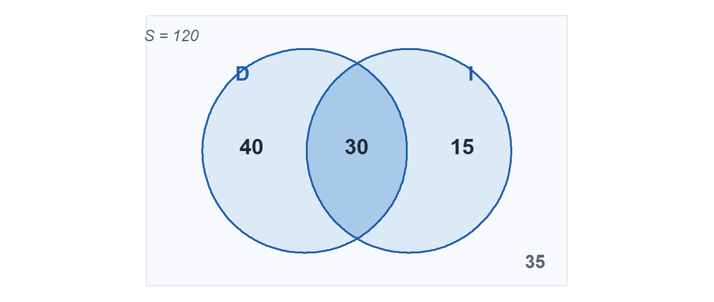
Let \(D\) = ordered a donut, \(I\) = ordered iced coffee. Off the table:
- \(P(D \cap I) = \dfrac{30}{120} = 0.25\)
- \(P(I) = \dfrac{45}{120} = 0.375\)
- \(P(D) = \dfrac{70}{120} \approx 0.583\)
The question asks for \(P(D \mid I)\), so use the formula, \(P(D \mid I) = \dfrac{P(D \cap I)}{P(I)}\):
\[P(D \mid I) = \frac{30/120}{45/120} = \frac{0.25}{0.375} = \frac{30}{45} \approx 0.667\]
Different question: given they got a donut, what is the probability they got iced coffee?
That is \(P(I \mid D)\), not \(P(D \mid I)\). Same formula, new denominator:
\[P(I \mid D) = \frac{30/120}{70/120} = \frac{0.25}{0.583} = \frac{30}{70} \approx 0.429\]
- The \(120\) cancels, which is why the shortcut of reading the row or column works
- Same \(P(D \cap I)\) in both numerators, the denominator is what changes
- \(P(D) \approx 0.583\) but \(P(D \mid I) \approx 0.667\), knowing they went iced moved it
The Multiplication Rule
Nothing new here. Start with the definition and multiply both sides by \(P(B)\):
\[P(A \mid B) = \frac{P(A \cap B)}{P(B)} \;\;\Longrightarrow\;\; P(A \mid B)\,P(B) = P(A \cap B)\]
ImportantMultiplication Rule
\[P(A \cap B) = P(A \mid B)\,P(B) = P(B \mid A)\,P(A)\]
Multiply along a path.
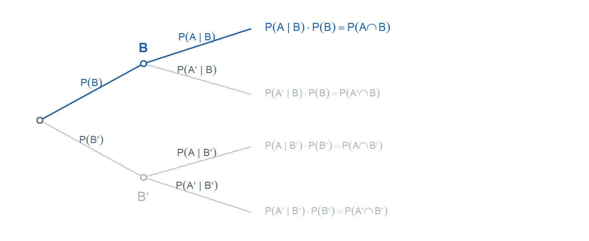
Example: Two Donuts from the Box
A box holds \(12\) donuts, \(5\) chocolate and \(7\) glazed. You reach in twice and take one each time, without looking and without putting the first one back.
What is the probability both are chocolate?
Let \(C_1\) = first is chocolate, \(C_2\) = second is chocolate.
- \(P(C_1) = \dfrac{5}{12}\)
- \(P(C_2 \mid C_1) = \dfrac{4}{11}\), one chocolate is gone and only \(11\) donuts are left
\[P(C_1 \cap C_2) = P(C_2 \mid C_1)\,P(C_1) = \frac{4}{11} \cdot \frac{5}{12} = \frac{20}{132} = \frac{5}{33} \approx 0.152\]
- The second draw is not \(5/12\), the first draw changed the box
- Multiplying unconditional probabilities, \(\frac{5}{12} \cdot \frac{5}{12} \approx 0.174\), is the wrong answer, that is sampling with replacement
The Law of Total Probability
ImportantLaw of Total Probability
If \(A_1, \dots, A_k\) are mutually exclusive and exhaustive, then for any event \(B\), \[P(B) = \sum_{i=1}^{k} P(B \mid A_i)\,P(A_i).\]
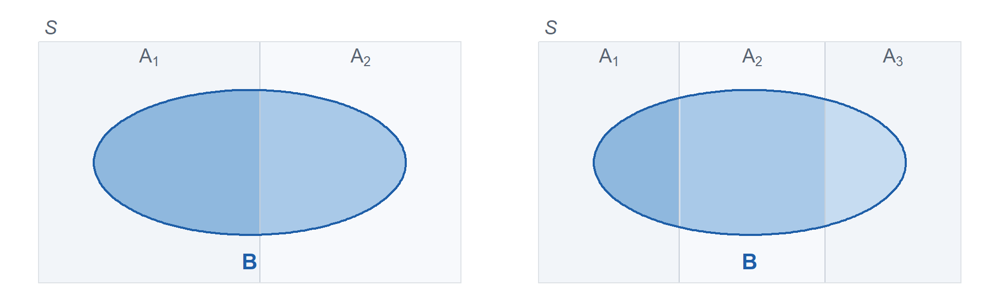
\(B\) is chopped into one piece per slab, and the pieces cannot overlap, so their probabilities add.
The Same Thing as a Tree
Multiply along each path, then add the paths that land in \(B\).
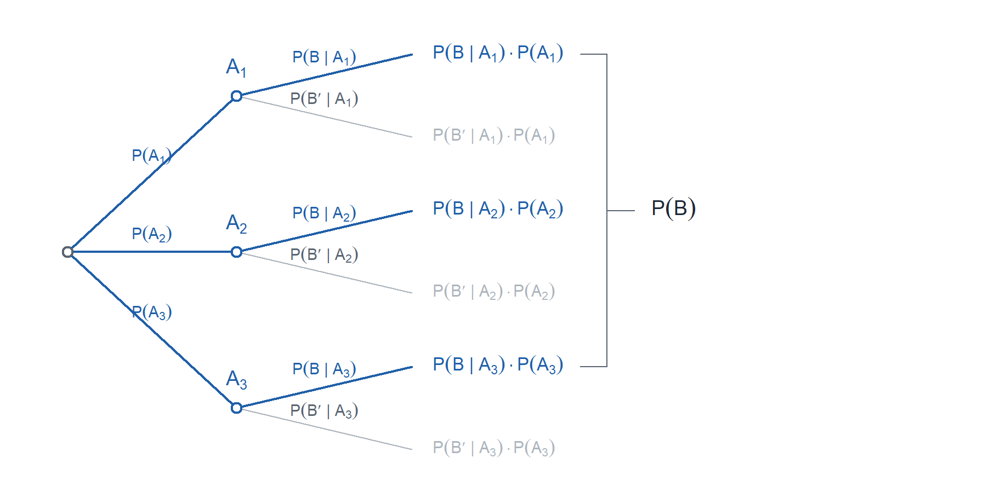
Example: The Screening Test
A disease affects \(2\%\) of a population. A screening test is given to everyone.
- If a person has the disease, the test is positive \(95\%\) of the time
- If a person does not have it, the test is positive \(5\%\) of the time
Let \(D\) = has the disease, \(+\) = the test is positive.
Let’s list out what we know.
- \(P(D) = 0.02\)
- \(P(D') = 0.98\)
- \(P(+ \mid D) = 0.95\)
- \(P(+ \mid D') = 0.05\)
What is the probability a randomly chosen person tests positive?
\(D\) and \(D'\) partition the population, so two paths end in a positive test:
\[P(+) = P(+ \mid D)\,P(D) + P(+ \mid D')\,P(D')\]
\[P(+) = (0.95)(0.02) + (0.05)(0.98) = 0.019 + 0.049 = 0.068\]
- \(P(D \cap +) = 0.019\) are the true positives, \(P(D' \cap +) = 0.049\) are the false ones
- There are more false positives than true ones, because \(D'\) is so much bigger than \(D\)
Bayes’ Theorem
ImportantBayes’ Theorem
\[P(A_j \mid B) = \frac{P(B \mid A_j)\,P(A_j)}{\sum_{i=1}^{k} P(B \mid A_i)\,P(A_i)}, \qquad j = 1, \dots, k\]
Back to the Screening Test
Last section we found \(P(+)\). That added up every way a positive test could happen.
A person tests positive. What is the probability they have the disease?
List off everything we know.
- \(P(D) = 0.02\), the prevalence
- \(P(D') = 0.98\)
- \(P(+ \mid D) = 0.95\), the test is positive when the disease is there
- \(P(+ \mid D') = 0.05\), the false positive rate
- \(P(+) = 0.068\), built last section with the Law of Total Probability
Put the numbers on the tree. Multiply along each path, then look at the two that end in a positive.
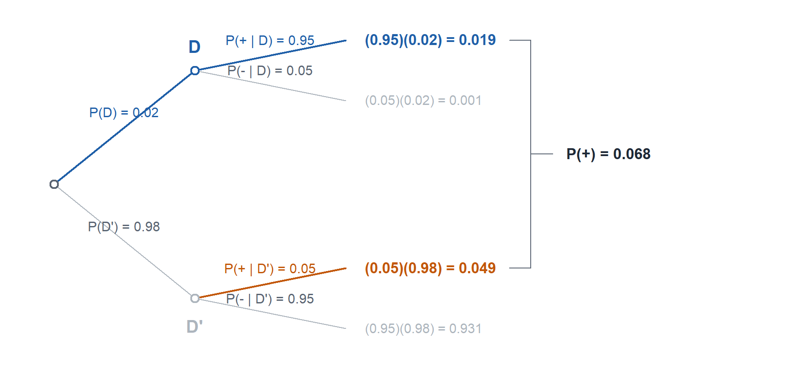
Bayes is the blue leaf over that bracket. Spelling the denominator out as the Law of Total Probability across the two branches:
\[P(D \mid +) = \frac{P(+ \mid D)\,P(D)}{P(+ \mid D)\,P(D) + P(+ \mid D')\,P(D')}\]
That entire denominator is \(P(+)\), the bracket on the tree:
\[P(D \mid +) = \frac{P(+ \mid D)\,P(D)}{P(+)}\]
\[P(D \mid +) = \frac{(0.95)(0.02)}{0.068} = \frac{0.019}{0.068} \approx 0.279\]
The prior was \(2\%\). One positive test moves it to \(28\%\), a big jump that is still nowhere near certainty.
WarningWatch the Direction
\(P(A \mid B)\) and \(P(B \mid A)\) are different numbers. Here \(P(+ \mid D) = 0.95\) but \(P(D \mid +) \approx 0.279\).
Board Problems
Problem 1: Bae’s Theorem
You go on a date with Taylor Swift. Historically, \(30\%\) of her dates go well, \(50\%\) are meh, and \(20\%\) go badly.
Whether she writes a song about the date depends on how it went. After a date that went well she writes one \(10\%\) of the time. After a meh date, \(30\%\) of the time. After a date that went badly, \(90\%\) of the time.
NoteQuestions
What is the probability she writes a song about your date?
She wrote a song about your date. What is the probability it went badly?
TipAnswers
Let \(S\) = she writes a song, and let \(W\), \(M\), \(B\) = the date went well, meh, badly.
- \(P(W) = 0.30\), \(P(M) = 0.50\), \(P(B) = 0.20\)
- \(P(S \mid W) = 0.10\), \(P(S \mid M) = 0.30\), \(P(S \mid B) = 0.90\)
- \(W\), \(M\), \(B\) partition the outcomes, so use the Law of Total Probability:
\[P(S) = P(S \mid W)\,P(W) + P(S \mid M)\,P(M) + P(S \mid B)\,P(B)\]
\[P(S) = (0.10)(0.30) + (0.30)(0.50) + (0.90)(0.20) = 0.03 + 0.15 + 0.18 = 0.36\]
- Bayes, with that \(0.36\) in the denominator:
\[P(B \mid S) = \frac{P(S \mid B)\,P(B)}{P(S)} = \frac{(0.90)(0.20)}{0.36} = \frac{0.18}{0.36} = 0.50\]
Only \(20\%\) of dates go badly, but bad dates are so much more likely to become songs that they are half of all the songs.
Problem 2: Sports and Clubs
In a company of cadets, \(60\%\) play a sport, \(50\%\) are in a club, and \(75\%\) do at least one of the two.
NoteQuestions
A cadet is in a club. What is the probability they play a sport?
A cadet plays a sport. What is the probability they are in a club?
A cadet is not in a club. What is the probability they play a sport?
TipAnswers
Let \(S\) = plays a sport, \(L\) = in a club. Then \(P(S) = 0.60\), \(P(L) = 0.50\), \(P(S \cup L) = 0.75\).
Every one of these needs \(P(S \cap L)\), which nobody handed us. Solve the addition rule for it first:
\[P(S \cup L) = P(S) + P(L) - P(S \cap L) \;\;\Longrightarrow\;\; P(S \cap L) = P(S) + P(L) - P(S \cup L)\]
\[P(S \cap L) = 0.60 + 0.50 - 0.75 = 0.35\]
- Now feed that into the definition:
\[P(S \mid L) = \frac{P(S \cap L)}{P(L)} = \frac{0.35}{0.50} = \mathbf{0.70}\]
- Same numerator, new denominator:
\[P(L \mid S) = \frac{P(S \cap L)}{P(S)} = \frac{0.35}{0.60} \approx \mathbf{0.583}\]
- The sport players split into those in a club and those not, so \(P(S \cap L') = P(S) - P(S \cap L) = 0.60 - 0.35 = 0.25\), and \(P(L') = 0.50\):
\[P(S \mid L') = \frac{0.25}{0.50} = \mathbf{0.50}\]
Being in a club moves a cadet from \(50\%\) to \(70\%\) on playing a sport. The addition rule got us the overlap, everything after that is conditioning.
Problem 3: Reading a Table
A survey of \(240\) cadets records whether they are corps squad and whether they passed the ACFT on the first attempt.
| Passed | Did not pass | Total | |
|---|---|---|---|
| Corps squad | 78 | 12 | 90 |
| Not corps squad | 102 | 48 | 150 |
| Total | 180 | 60 | 240 |
NoteQuestions
A cadet is corps squad. What is the probability they passed?
A cadet passed. What is the probability they are corps squad?
Why are (a) and (b) so different?
What is the probability a cadet is corps squad and passed? Get it twice, once off the table and once with the multiplication rule.
TipAnswers
Let \(C\) = corps squad, \(P\) = passed on the first attempt.
- Conditioning on \(C\) throws out everyone else, so the denominator is \(90\):
\[P(P \mid C) = \frac{78}{90} \approx \mathbf{0.867}\]
- Now the denominator is the \(180\) who passed:
\[P(C \mid P) = \frac{78}{180} \approx \mathbf{0.433}\]
Same \(78\) cadets on top, different world underneath. Corps squad is a small group that mostly passes, so most passers are still not corps squad.
Off the table, \(\dfrac{78}{240} = \mathbf{0.325}\). From the multiplication rule:
\[P(C \cap P) = P(P \mid C)\,P(C) = \frac{78}{90} \cdot \frac{90}{240} = \frac{78}{240} = 0.325\]
The \(90\) cancels, which is the whole content of the multiplication rule.
Problem 4: Squad Detail
A squad has \(10\) cadets, \(4\) of them yearlings. Three are picked at random for a detail, one at a time, and nobody gets picked twice.
NoteQuestions
What is the probability all three are yearlings?
What is the probability at least one is a yearling?
The first one picked is a yearling. What is the probability the other two are as well?
TipAnswers
Let \(Y_i\) = the \(i\)th cadet picked is a yearling.
- Multiply along the path, updating after every pick:
\[P(Y_1 \cap Y_2 \cap Y_3) = \frac{4}{10} \cdot \frac{3}{9} \cdot \frac{2}{8} = \frac{24}{720} = \frac{1}{30} \approx \mathbf{0.033}\]
- Go through the complement, no yearlings at all:
\[P(\text{none}) = \frac{6}{10} \cdot \frac{5}{9} \cdot \frac{4}{8} = \frac{120}{720} = \frac{1}{6}\]
\[P(\text{at least one}) = 1 - \frac{1}{6} \approx \mathbf{0.833}\]
- The first pick already happened, so the squad is now \(9\) cadets with \(3\) yearlings left:
\[P(Y_2 \cap Y_3 \mid Y_1) = \frac{3}{9} \cdot \frac{2}{8} = \frac{1}{12} \approx \mathbf{0.083}\]
Notice (a) is (c) times \(P(Y_1) = 0.4\). Conditioning just starts you partway down the path.
Problem 5: Stretch
Three doors. One hides a car, the other two hide goats. You pick a door. The host, who knows where the car is, opens a different door and always shows you a goat. He then offers to let you switch to the remaining door.
NoteQuestions
You picked door 1 and he opened door 3. What is the probability the car is behind door 1? Behind door 2?
Should you switch?
TipAnswers
Let \(C_i\) = the car is behind door \(i\), and \(H_3\) = the host opens door 3. Before he does anything, \(P(C_1) = P(C_2) = P(C_3) = \frac{1}{3}\).
The host’s rules are what carry the information:
- \(P(H_3 \mid C_1) = \frac{1}{2}\), both other doors have goats and he picks one
- \(P(H_3 \mid C_2) = 1\), door 2 has the car and he cannot open your door, so he is forced to door 3
- \(P(H_3 \mid C_3) = 0\), he never opens the car
\[P(H_3) = \tfrac{1}{2} \cdot \tfrac{1}{3} + 1 \cdot \tfrac{1}{3} + 0 \cdot \tfrac{1}{3} = \frac{1}{2}\]
\[P(C_1 \mid H_3) = \frac{(1/2)(1/3)}{1/2} = \mathbf{\frac{1}{3}} \qquad P(C_2 \mid H_3) = \frac{(1)(1/3)}{1/2} = \mathbf{\frac{2}{3}}\]
- Switch. Your door was \(\frac{1}{3}\) before and it is still \(\frac{1}{3}\) after, because the host was always going to be able to show you a goat. The other \(\frac{2}{3}\) has nowhere left to sit except door 2.
If the host opened a door at random and it happened to be a goat, \(P(H_3 \mid C_2) = \frac{1}{2}\) instead of \(1\), both doors sit at \(\frac{1}{2}\), and switching gains nothing. The answer is about what the host is allowed to do, not about the doors.
Before You Leave
Today
- \(P(A \mid B) = \dfrac{P(A \cap B)}{P(B)}\), conditioning renormalizes to \(B\)
- \(P(A \cap B) = P(A \mid B)\,P(B)\)
- Break an event across a partition with the Law of Total Probability
- Flip the conditioning with Bayes’ Theorem
- \(P(A \mid B) \ne P(B \mid A)\)
Any questions?
Next Lesson
Lesson 7: Independence
- Define independent events and use independence to simplify probability calculations
- Combine counting techniques with independence
Reading: Devore 2.5
Upcoming Graded Events
- WebAssign 2.4 - Due at the start of Lesson 7
- WPR I - Lesson 16 (covers Lessons 1-13)
- TEE - 15-18 Dec 2026